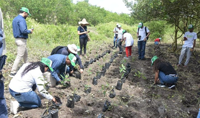

01
PROYECTOS LOCALES
Lo alentador
Se inició la zonificación de los manglares urbanos de la ciudad, en la siguiente información podemos encontrar algunos proyectos o herramienta que permitirá establecer las acciones necesarias para la recuperación de estos ecosistemas.Algunas comunidades que rodean y habitan la Ciénaga de la Virgen han desarrollado acciones por su recuperación. Este es el caso del Consejo Comunitario de Villa gloria, conformado por 16 mujeres que cultiva mangle (Montaño, 2023). Desde el año 2018, y como compensaciones a las comunidades del norte de Cartagena, muchas de las cuales viven de la pesca, la concesión costera, con el apoyo del Sena y Car dique capacitaron a estas mujeres para cultivaran el mangle y repoblaran la ciénaga. (Montaño, 2023).También existen iniciativas entre organizaciones de la sociedad civil y empresas comunitarias locales que propenden por la preservación de ciénagas y manglares. La Fundación Eco progresó se articuló con empresas locales que ofrecen servicio de turismo comunitario y eco turismo con el ánimo de generar acciones de restauración (siembra) y protección de la Ciénaga de la Virgen Moura & Cifuentes-Sarmiento La Fundación Eco progresó le apuesta a iniciativas de ecoturismo para la Ciénaga de la Virgen, que contribuyen a la preservación de los ecosistemas de manglar, así como también lo hacen empresas comunitarias como Ecotours Boquilla, Los Arriberos EAT, La Cueva del Manglar, y la Corporación Ecoturística Punto Verde (Mourra & Cifuentes-Sarmiento, 2013).
